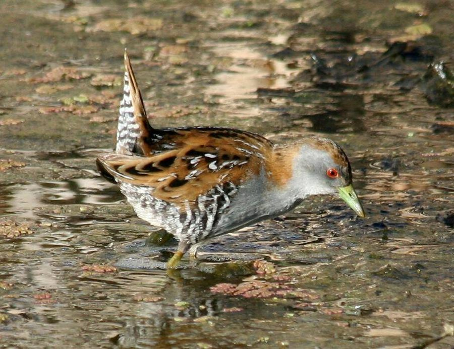

बेलन्स क्रेकBaillon's Crake
Porzana pusilla · Rallidae · BRD-0258

- Scientific name वैज्ञानिक नाम
- Porzana pusilla (Pallas, 1776)
- Family कुल
- Rallidae
- Hindi हिंदी
- बेलन्स क्रेक
- Local names स्थानीय नाम
- baillons crake, crake
- Status here यहाँ की स्थिति
- native
- Movement आवागमन
- Winter visitor
- Known from कहाँ दर्ज
- Others have published records from the Basti–Ayodhya districts बस्ती–अयोध्या के ज़िलों से दूसरों के प्रकाशित अभिलेख
- IUCN IUCN
- LC
- Review समीक्षा
- audited and independently read
When to look कब देखें
Winter visitor शीतकालीन प्रवासी. Expected mainly in September, October, November, December, January, February, March, April. मुख्यतः सितंबर, अक्टूबर, नवंबर, दिसंबर, जनवरी, फ़रवरी, मार्च, अप्रैल में अपेक्षित।
Arrives in September–October from breeding grounds in central Asia and Russia; departs by March–April. Expected in reed beds, marsh vegetation, and wetland edges. All migrants and visitors →
Tell it apart from इनसे अलग पहचानें
बेलन्स क्रेक / Baillon's Crake
Porzana pusilla (Pallas, 1776) — Rallidae
बेलन्स क्रेक — यह सबसे छोटी क्रेक में से एक है जो सर्दियों में रीड़ों में छिपी रहती है। बहुत शर्मीली चिड़िया है, रीड़ों के बीच में छिपकर चलती है। इसकी आवाज़ "किरिट-किरिट" सी होती है। पानी की सतह पर चलना पसंद करती है और बहुत सतर्क रहती है।
Quick Identification त्वरित पहचान
| Feature | Description |
|---|---|
| Size | Tiny crake; 17–19 cm long |
| Plumage | Olive-brown or slate-grey; compact body |
| Upperparts | Olive-brown or slate-grey; crown darker |
| Underparts | Buff-white or pale grey; barred flanks |
| Tail | Short, dark, often raised; slightly barred |
| Bill | Short, pointed, green-grey |
| Eyes | Small, dark |
| Legs | Long, greenish; adapted for walking through vegetation |
| Behaviour | Secretive, skulking; stays in dense reed beds |
| Vocalisations | Distinctive "kick-kick-kick" or "kirrip-kirrip" calls |
Field tip: A tiny, secretive crake in dense reed beds and marsh vegetation. Very difficult to see; often detected by its distinctive call. Stays low in vegetation, moves mouse-like through reeds. Long greenish legs visible when moving across open water.
हिंदी — कैसे पहचानें:
सबसे छोटी क्रेक में से एक; रीड़ों में छिपा रहता है।
"किरिट-किरिट" की आवाज़।
बहुत शर्मीली चिड़िया।
लंबी पतली टाँगें।
Morphology आकारिकी
Biometrics:
| Measurement | Range |
|---|---|
| Total length | 170–190 mm |
| Wing (flattened chord) | 70–82 mm |
| Tail | 35–45 mm |
| Bill | 14–18 mm |
| Tarsus | 30–36 mm |
| Weight | 24–42 g |
Size: 17–19 cm long. One of the smallest crakes in the region.
Plumage (male): Slate-grey or blue-grey on crown and upperparts. Back olive-brown with darker streaking or spotting. Tail short, dark, often cocked. Underparts buff-white or pale. Flanks and undertail coverts barred with darker colour. Wings dark with rufous patch.
Plumage (female): Similar to male but slightly duller. Underparts more buff.
Bill: Short, pointed, greenish-grey with darker tip.
Legs: Long for body size, greenish or yellowish-green. Adapted for wading through marsh vegetation.
Feet: Long-toed, adapted for marsh walking.
Eyes: Small, dark.
Tail: Short, often cocked upward, dark with lighter barring.
Sexes: Very similar, females slightly duller.
Vocalisations. Call repertoire:
- Main call: Rapid series of "kick-kick-kick" or "kirrip-kirrip-kirrip", often at dusk.
- Contact calls: Softer chirps and squeaks.
- Alarm calls: Sharp calls when disturbed.
हिंदी: "किरिट-किरिट-किरिट" की तेजी से दोहराई जाने वाली आवाज़। सुबह और शाम को ज्यादा बोलता है।
Behaviour & Ecology व्यवहार और पारिस्थितिकता
Omnivore: Feeds on mix of insects, small invertebrates, and plant seeds and shoots.
Feeding: Gleans insects and invertebrates from marsh vegetation. Walks through shallow water and reed beds, picking food. Also takes seeds from marsh plants.
Habitat specialization: Entirely dependent on reed beds and dense marsh vegetation. Requires thick vegetation for shelter.
Highly secretive: One of the most skulking crakes. Stays deep in reed beds. Difficult to observe. Usually detected by call only.
Nocturnal calling: Particularly vocal at dusk and dawn, especially at start of breeding season and during migration.
Walking behaviour: Walks mouse-like through vegetation, head low. Long legs visible when wading through shallow water.
Flight: Rarely observed in flight. Reluctant flier. Flies only when disturbed or during migration.
हिंदी: रीड़ों में छिपा रहता है। कीड़े और पत्ते खाता है। बहुत सावधान रहता है। रात को बोलता है।
Life Cycle / Phenology जीवन चक्र
Winter visitor: Arrives in September–October from northern breeding grounds. Departs February–April.
Breeding range: Central Asia, southern Russia, and adjacent regions. Breeds April–August in extensive reed beds.
Migration: Long-distance migrant. Nocturnal migrant.
Wintering: Solitary in individual reed beds. Males establish and maintain territories by calling from dusk.
Moult: Complete moult occurs before arrival; breeding plumage acquired on wintering grounds.
Timing in UP: Early arrival September (vanguard); main arrival October; peak calling October–November and February–March (especially at start of return migration); departure February–April.
हिंदी: सितंबर में आना शुरू करते हैं, अप्रैल तक चले जाते हैं। रीड़ों पर सर्दी काटते हैं।
Host Plants or Prey आहार
| Food Type | Examples | Capture Method |
|---|---|---|
| Insect larvae | Chironomids, small Lepidoptera larvae | Glean from reed stems |
| Small invertebrates | Tiny spiders, small beetles, water insects | Glean from vegetation |
| Seeds | Marsh plant seeds | Pick from plants and ground |
| Young shoots | Reed shoots, grass shoots (seasonal) | Pull and eat vegetation |
हिंदी: कीड़े, इल्लियाँ और पत्ते खाता है। रीड़ों को सावधानी से खोजता है।
Predators / Natural Enemies शत्रु
- Avian predators: Common Kestrel, Merlin, Indian Eagle-Owl, small eagles
- Mammalian predators: Mongoose, rat, weasel, cat
- Nest predators: Crows, snakes, rats, weasels
- Chick predators: Corvids, raptors, snakes
हिंदी: छोटी शिकारी चिड़ियाँ इसका शिकार करती हैं। सांप और कौवे खतरनाक हैं।
Agricultural / Human Relevance कृषि प्रासंगिकता
Protected status: All wild birds in India are protected under the Wildlife (Protection) Act 1972. Hunting is illegal.
Ecological value: Feeds on insects including pest species. Helps control marsh invertebrates.
Wetland indicator: Presence indicates healthy reed beds and marsh ecosystems. Indicator of wetland quality.
Cultural significance: Known as "murga" or "murgi" in local names. Part of traditional wetland fauna.
हिंदी: यह पक्षी विधि अधिनियम 1972 के अंतर्गत संरक्षित है। इसका शिकार करना कानूनी रूप से निषिद्ध है। रीड़ों और दलदलों के स्वास्थ्य का संकेतक है।
Expected Locally स्थानीय रूप से अपेक्षित
Not a field record. Written from published accounts for eastern Uttar Pradesh. No confirmed local sighting yet — if you have seen it, that is what the atlas needs.
अभी तक स्थानीय पुष्टि नहीं। यह विवरण प्रकाशित स्रोतों से है, किसी अवलोकन से नहीं।
Baillon's Crake is a winter visitor to the Indo-Gangetic plain and is expected throughout eastern Uttar Pradesh in suitable reed bed and marsh habitat. GBIF holds published records from these districts. The species is particularly vocal during periods of arrival (September–October) and departure (February–March), making detection easier at these times. The distinctive rapid "kick-kick-kick" or "kirrip-kirrip" call is the primary means of detection, as the bird is highly secretive. A first record would require a dated photograph with GPS coordinates and date, submitted through the About page; alternatively, a recording of the distinctive call would constitute strong evidence.
Distribution वितरण
Global range: Europe and Asia, breeding in temperate regions. Winters from Mediterranean and North Africa eastward through Asia and into Africa.
In India: Winter visitor to reed beds and marshes across northern and central India. Widespread but local.
In Uttar Pradesh: Regular winter visitor to reed beds and marsh areas throughout the state. Local and seasonal.
In Basti district / eastern UP: Winter visitor to reed beds and marshes. Expected September–April. Often underrecorded due to secretive behaviour; detection depends on call.
Research Questions शोध प्रश्न
- What is the distribution and population size of Baillon's Crakes in reed beds of eastern UP, as determined by calling surveys?
- How does the call frequency and calling behaviour of Baillon's Crakes vary through the winter season?
- क्या रीड़ों की कटाई और जल स्तर में बदलाव से इस चिड़िया की आवाज़ों की आवृत्ति प्रभावित होती है?
- What is the diet composition of Baillon's Crakes in different seasons and habitat types in eastern UP?
- How can the distinctive call of Baillon's Crake be used as a census tool for monitoring winter visitor populations? (A child can record and count calls at dusk.)
- What is the temporal pattern of arrival and departure of Baillon's Crakes, and does it correlate with water level or temperature changes?
Similar Species मिलती-जुलती प्रजातियाँ
| Species | Key Difference | Hindi | Field Rule |
|---|---|---|---|
| Spotted Crake (Porzana porzana) | Larger (22–24 cm); more spotted overall; different call | धब्बेदार मुर्गा | Spotted is larger and more spotted throughout. Baillon's is smaller with less spotting. Different call. |
| Little Crake (Porzana parva) | Smaller (17–19 cm); males have red face patch in breeding; different call and structure | बेलन्स क्रेक | Little Crake male can show red face patch in breeding plumage. Baillon's has no red. Different call. |
| Corn Crake (Crex crex) | Much larger (27–30 cm); buff coloration; different habitat; different call | सीसा भाई | Corn Crake is much larger and has buff colouration. Different habitat (grassland not reed beds). |
Field rule: A tiny, secretive crake in dense reed beds with long greenish legs, giving rapid "kirrip-kirrip" calls is Baillon's Crake. The size, secretive behaviour, and distinctive call are diagnostic.
Taxonomy & Classification वर्गीकरण
Original description. Described by Pallas in 1776. Type locality: Central Asia.
Subspecies. P. p. pusilla (Pallas, 1776) — Asian populations (including Indian populations). Other subspecies in Europe and Africa.
Family and order placement. Order Gruiformes; family Rallidae (rails, coots, and crakes). Genus Porzana contains several small crake species.
Phylogenetic notes. Porzana pusilla is closely related to other small Porzana species, particularly Little Crake (P. parva), from which it is sometimes difficult to distinguish.
IUCN status rationale. Assessed as Least Concern (LC) globally. Populations are stable and widespread. The species is dependent on reed beds but is adaptable to various wetland types.
हिंदी: यह विश्वभर में कई स्थानों पर पाया जाता है। भारत में सर्दियों में आता है। कानून से पूरी तरह सुरक्षित है।
Photo Gallery फोटो गैलरी
No photos yet — add field photos to media/species/baillons_crake/ and run node scripts/sync_photos.js.
Wanted photos:
- Individual showing overall plumage and posture
- Close-up of head showing bill and eye
- Individual wading or walking in shallow water showing long legs
- In reed bed habitat
- In flight (rare)
- Ventral view showing underpart colouration
References संदर्भ
- Pallas, P. S. (1776). [Original description]. Reise durch verschiedene Provinzen des Russischen Reiches, Vol. 3, App. Pp. 702. [details from GBIF]
- Ali, S. & Ripley, S.D. (1987). Handbook of the Birds of India and Pakistan. Vol. 2. Oxford University Press, New Delhi. Pp. 148–150.
- Grimmett, R., Inskipp, C. & Inskipp, T. (2011). Birds of the Indian Subcontinent. 2nd ed. Christopher Helm, London. Pp. 78–79.
- Taylor, B. & van Perlo, B. (1998). Rails, Crakes, Coots and Finfoots. Christopher Helm, London.
- GBIF Occurrence Data — Porzana pusilla, India.
- BirdLife International (2023). Porzana pusilla. IUCN Red List of Threatened Species. IUCN, Cambridge.
Source file: species/fauna/birds/baillons_crake.md